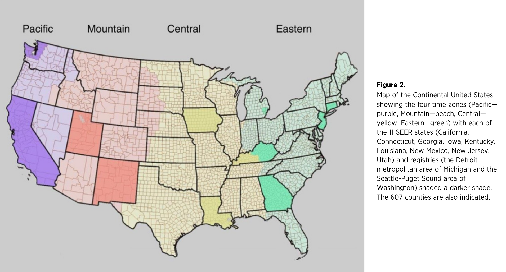

Day light savings
Time lost or not

By TimeZonesBoy - Own work, CC BY-SA 3.0, Link
Where DST starts

By Joseph-Siffred Duplessis - ZgEyj5EEKdux-g at Google Cultural Institute maximum zoom level, Public Domain, Link

By Sir J. Benjamin Stone (1838–1914) - Cropped from a print in the Images from the J. Benjamin Stone Collection, Birmingham Central Library, Public Domain, Link
.png#/media/File:Time_zone_map_of_the_United_States_1913_(colorized).png)
By OwenBlacker - Own work based on: Time zone map of the United States 1913.tif, Public Domain, Link

By United Cigar Stores Company - Princeton University Poster Collection at the Smithsonian Online Virtual Archives (https://sova.si.edu/), Public Domain, Link

By Ltbubbas - Own work , CC BY-SA 4.0, Link

By Paul Eggert - based on Image:BlankMap-World-Subdivisions.PNG, plus the data in the tz database, plus data in the maps on the INMS's Time Zones & Daylight Saving Time page., CC BY-SA 3.0, Link
Effects
Cancer
